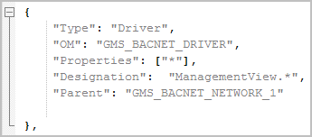
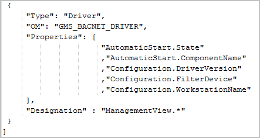
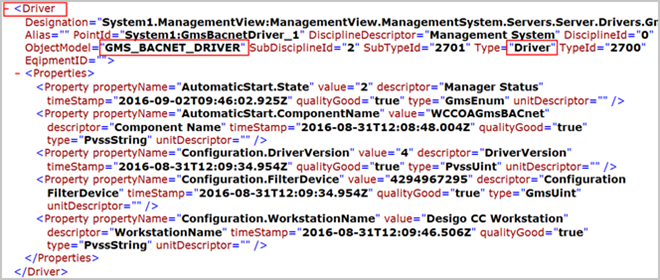

Driver Section
This section contains information related to the drivers in the library of the 3rd partyBACnet extension module. The 3rd party BACnet extension module, the IBaseConfigurationScript.json file for Network and Drivers is available under
[Installation drive]:\[Installation folder]\[Project Name]\libraries\ Global_BACnet_HQ_1\Scripts.
Provide the OM for the drivers whose instances you want to be reported, along with its properties.
IBaseSampleConfiguration.json file
Contains the structure for providing drivers and their properties of an extension module. As an example, it displays the pre-configured OM and properties for the 3rd party BACnet driver.

Corresponding Section for the 3rd Party BACnet Extension Module
Contains the pre-configured driver OM, GMS_BACNET_DRIVER, along with its properties, and the designation name.

Driver Section in the IBase Report for the 3rd Party BACnet Extension Module
Section of the IBase report displaying the driver OM name and its properties as configured in the IBaseConfiguration.json file for the 3rd party BACnet extension module.
